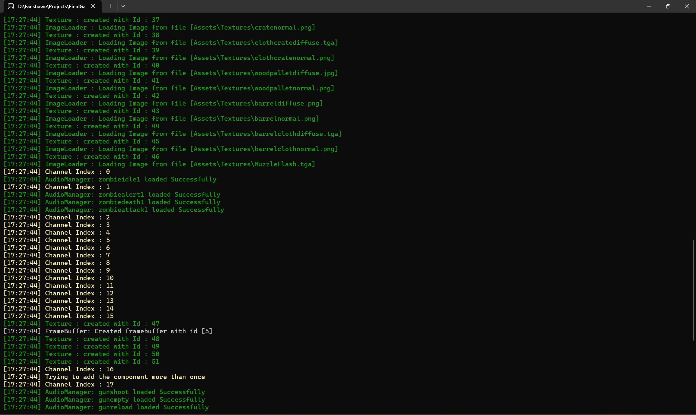
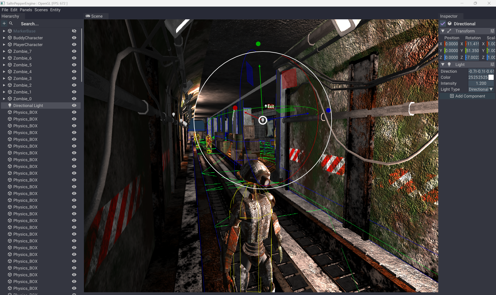
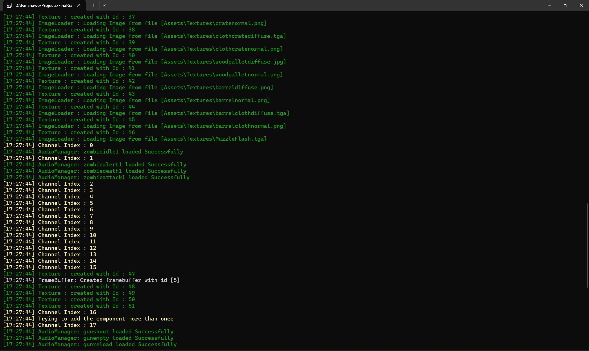
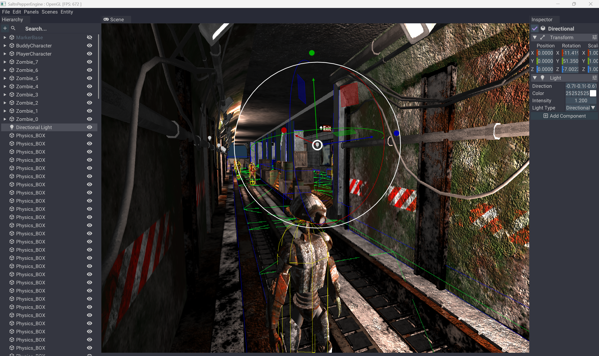

GAME ENGINE A Game engine created from scratch using C++ and OpenGL
 



I always wanted to learn how game engine like Unreal and Unity worked under the hood. So I decided to create my own engine as a learning exercise. This engine was created during my Advanced game development program at Fanshawe College
The main thing that i wanted to learn was Navigation meshes and to learn good Pathfinding.
It started with just a small render engine loading gltf meshes and rendering the triangles. This went on to become a game engine with full blown editor
The gameplay features a small technical demo to showcase the Engine. The game is set in an underground abandoned subway station infested with zombies. The player along with his robot "Buddy" has to escape to the surface.
The player is equiped with a pistol and can also command "Buddy" to kill zombies. The technical demo is to showcase the mesh navigation system that is built from scratch. The Robot and Zombies use this navigation system for pathfinding.
The Engine is built from ground up using C++ and OpenGL. It features A multitude of Graphical features like, Post-process , Deferred Lighting and dynamic skyboxes.
Bullet Physics is intregated as the physics platform and EnTT is used for Data oriented Stack. The Editor is rendered using IMGui and can be accessed any thing using the "~" key.
The Base of the Engine is coded in C++ and uses OpenGL as the Rendering API. The model loader uses AssImp for loading a variety of formats and there's a custom allocator to create and assign Vertex Arrays and Buffer Objects.
The Engine also has a custom Shader compiler which can read #includes inside the GLSL files and to compile the shader along with its dependencies
The Base of the Engine is coded in C++ and uses OpenGL as the Rendering API. The model loader uses AssImp for loading a variety of formats and there's a custom allocator to create and assign Vertex Arrays and Buffer Objects.
The Engine also has a custom Shader compiler which can read #includes inside the GLSL files and to compile the shader along with its dependencies
The showcase feature of this engine was the custom made mesh navigation system - it checks the mesh vertices and creates a nav mesh for pathfinders to follow.
FM0d is integrated in the Engine to provide spacial audio and to support various DSP effects.
More to Come ...
This is an ongoing project that i am aiming to improve and optimize. The next plan includes addition of RHIs to integrate DX12 and Vulkan apis.
Builing this Engine taught me a lot about how larger engines like Unreal run behind the scenes .It has also increased my love (and Hate) for C++.